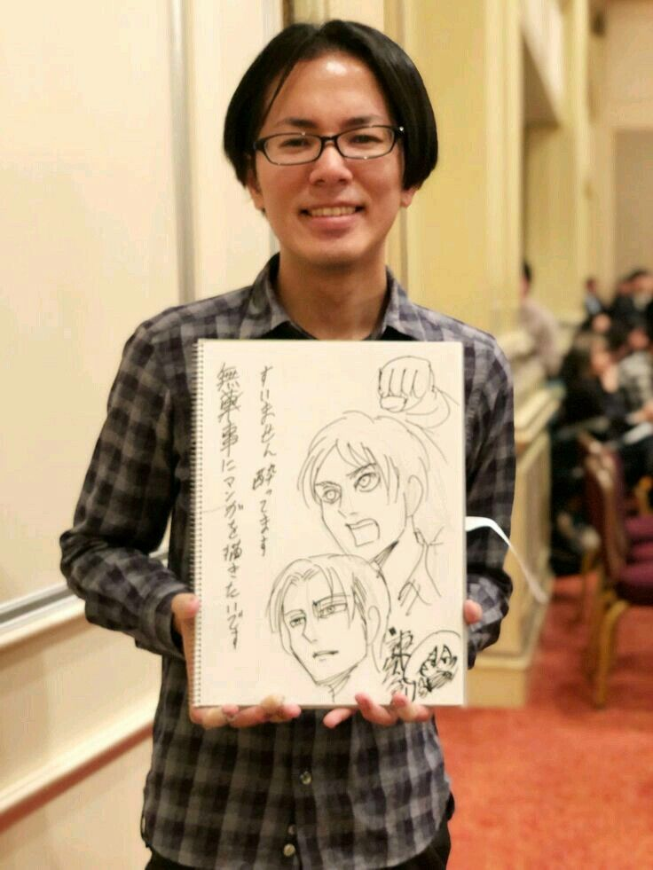

Hajime Isayama est un mangaka japonais, mondialement connu pour être le créateur de la série Attack on Titan (Shingeki no Kyojin), un des mangas les plus populaires et influents des dernières décennies. Né le 29 août 1986 à Ōyamazaki, une ville située dans la préfecture de Kyoto, au Japon, Isayama a grandi dans un environnement relativement tranquille, mais il a toujours été fasciné par les histoires de guerre, de survie et de combats.
Isayama a grandi dans une petite ville, où il a développé un intérêt pour le dessin dès son enfance. Cependant, ses débuts dans le monde du manga ne furent pas sans difficultés. Après avoir étudié à l'Université des Arts de Kyushu, il a déménagé à Tokyo pour poursuivre une carrière dans le manga. Ses premières œuvres n'ont pas connu un grand succès, mais sa détermination à poursuivre son rêve était inébranlable. Il a finalement attiré l'attention de l'éditeur Kodansha avec un court-métrage intitulé "Heart Break One", ce qui lui a permis d'obtenir son premier contrat professionnel. Cela a marqué le début de sa carrière de mangaka. Cependant, c'est avec Attack on Titan qu'il connaît un véritable succès international.
Le style graphique d'Isayama est souvent décrit comme brut, avec une utilisation marquée de lignes anguleuses et une certaine austérité dans ses dessins. Cela correspond bien à l'atmosphère sombre et parfois oppressante de Attack on Titan. Bien que ses dessins aient évolué au fil des années, il conserve une approche très dynamique et énergique, notamment dans ses scènes d'action. Isayama cite comme influences des mangakas tels que Katsuhiro Otomo (Akira) et Masashi Kishimoto (Naruto), mais également des œuvres occidentales comme les films de George A. Romero (notamment ses films sur les zombies) et des romans de H.P. Lovecraft, qui l'ont inspiré dans la création de créatures gigantesques et de récits d'horreur apocalyptiques.
En dehors de Attack on Titan, Isayama a aussi travaillé sur d'autres projets, mais aucun n'a atteint la même ampleur que son œuvre phare. Après la conclusion de Shingeki no Kyojin, il a exprimé son désir de prendre du recul par rapport à la scène publique et de se concentrer sur de nouveaux projets personnels. Son parcours, marqué par un immense succès, est également l'histoire d'un mangaka qui a su capturer l'air du temps et offrir au public une œuvre profondément marquante.